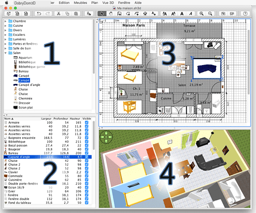
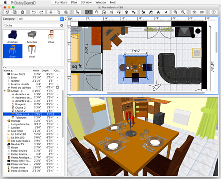

| DobryDom3D felhasználói felület | |||
Minden DobryDom3D ablak - melyben egy otthon belsõ felépítését szerkeszthetjük - az alant leírt négy, átméretezhetõ panelból áll:  |
|
A panelek bármelyike aktiválható. Az akív panel az azt körülvevõ színes négyszeögrõl ismerhetõ fel. A DobryDom3D menüinek alkalmazhatósága attól is függhet, éppen melyik az aktív panel.Az egyes panelek között a Shift és Tab billentyûk együttes lenyomásával lehet váltani, illetõleg a kívánt panelre kattintással az aktívvá válik. A panelek fölött található eszközsor tetszés szerint kihúzható az ablakon kívülre, vagy akár a panelek fölé is húzható az egérrel. A 3D nézet külön kiemelhetõ az ablakból a 3D nézet > megjelenítés külön ablakban menüpont választásával. A Beállítások és egyéb menüpontok segítségével sokféle lehetõség adódik a DobryDom3D ablakainak testreszabására. Ahogy a lenti képen is látszik, melyen a fenti otthon látható, a nyelv és az alapértelmetett mértékegység megváltoztatható, a bútorkatalógus megjeleníthetõ kereshetõ listaként, a bútorlista oszlopai változtathatók, az alaprajzon elhelyezett objektumok többféleképpen megjeleníthetõk, a 3D nézet navigációs nyilai elrejthetõk...  |